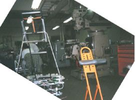

'97NHKロボットコンテストについて
97年度、我が部が造りだしたマシンの名前は
”愛子花蝶”。
斜めのカタパルトと回転テーブル型花搭載機を搭載し、断頭台のごとく
爆音をたてて、花を飛ばす。手なんていれたらマジに出血モノ。
とりあえず結果から言うと我が部は校内予選敗退。今年度は主力の
４年生が１人もおらず、５年生も忙しかったためなのか・・・。
いまさらながら、自分的にはちがうものがよかったかなぁ。
２年連続の欠場はさすがに辛い。来年こそは絶対に出場してみせる！
応援してくれた皆さん、期待に応えられずどうもすいませんでした。

↑これ
画像が変なのはご了承ください。
HOME